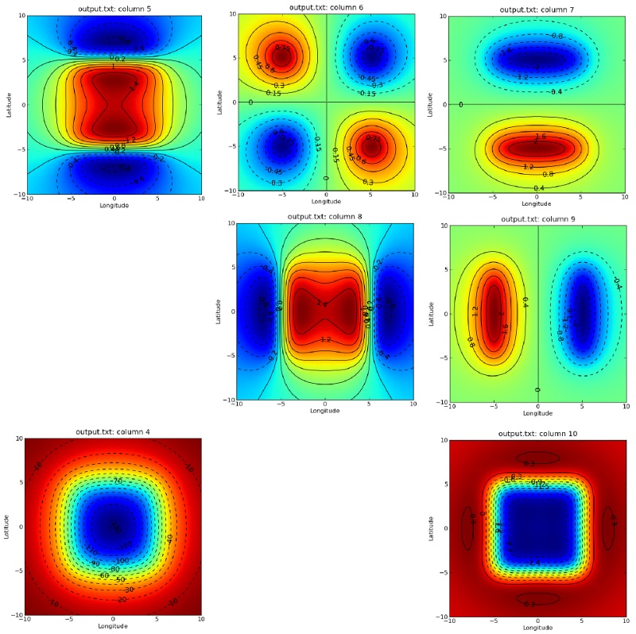

| |
Tesseroids 1.0: User Manual and API Documentation |
A note about heights and unitsIn order to have a single convention, the word "height" means "height above the Earths surface" and are interpreted as positive up and negative down, ie. oriented with the z axis of the Local coordinate system. Also, all input units are in SI and decimal degrees. Output of tessg* programs are in mGal and Eotvos. All other output is also in SI and decimal degrees. Getting help informationAll programs accept the -h and --version flags. -h will print a help message describing the usage, input and output formats and options accepted. --verbose prints version and license information about the program. Computing the gravitational effect of a tesseroidThe tessgx, tessgy, tessgz, tessgxx, etc. programs calculate the combined effect of a list of tesseroids on given computation points. The computation points are passed via standard input and do NOT have to be in a regular grid. This allows, for example, computation on points where data was measured. The values calulated are put in the last column of the input points and printed to standard output. For example, if calculating on these points: lon1 lat1 height1 value1 othervalue1 lon2 lat2 height2 value2 othervalue2 ... lonN latN heightN valueN othervalueN the output would look something like: lon1 lat1 height1 value1 othervalue1 gz1 lon2 lat2 height2 value2 othervalue2 gz2 ... lonN latN heightN valueN othervalueN gzN The input model file should contain one tesseroid per line and have columns formated as: W E S N HEIGHT_OF_TOP HEIGHT_OF_BOTTOM DENSITY HEIGHT_OF_TOP and HEIGHT_OF_BOTTOM are positive if the above the Earth's surface and negavitive if bellow. Remember that HEIGHT_OF_TOP > HEIGHT_OF_BOTTOM! Use the command line option -h to view a list of all commands available. Example:Calculate the field of a tesseroid model having verbose printed and logged to file "gz.log" and GLQ order 3/3/3. tessgz modelfile.txt -v -lgz.log -o3/3/3 < points.txt > gz_data.txt The -a flagThe -a flag on tessg* programs enables the automatic re-sizing of tesseroids when it is needed to maintain the GLQ precision desired. As a general rule, the tesseroid should be no bigger than it's distance from the computation point. Using this flag breaks the tesseroids automatically when this criterion is breached. This means that the computations can be performed with order 2/2/2 (default) which is much faster and still maintain correctness. Some preliminary tests show that using the -a flag with order 2/2/2 is up to 5 times faster than increasing the GLQ order. It is strongly recommended using this flag and 2/2/2 order always. Verbose and logging to filesThe -v flag enables printing of information messages to stderr. If ommited, only error messages will appear. The -l flag enables logging of information and error messages to a file. Comments and provenance informationComments can be inserted into input files by placing a "#" character at the start of a line. All comment lines are ignored. tessg* programs print the comment lines of the input to standard output. All programs insert comments about the provenance of their results (where they came from) to their output. These include names of input files, version of program used, date, etc. Generating a regular gridIncluded in the package is program "tessgrd" which creates a regular grid of points and prints them to standard output. Exampletessgrd -r-10/10/-10/10 -b100/100 -z250e03 -v > points.txt Automated model generationTesseroids 1.0 includes a new program called "tessmodgen" for automatically generating a tesseroid model from a map of an interface. The interface can be any surface deviating from a reference level. For example, topography (a DEM) deviates from 0, a Moho map deviates from a mean crustal thickness, etc. This program takes as input a REGULAR grid with longitude, latitude and height values of the interface. Each tesseroid is generated with a grid point at the center of it's top face. The top and bottom faces of the tesseroid are defined as:
The density of the tesseroids can be passed using the -d option. This will asign a density value of when the interface is above the reference and a value of if the interface is bellow the reference. Alternatively, the density of each tesseroid can be passed as a forth column on the input grid. As with the -d option, if the interface is bellow the reference, the density value will be multiplied by -1! Also, an error will occur if both a forth column and the -d option are passed! Example:To generate a tesseroid model from a Digital Elevation Model (DEM) with resolution using a density : tessmodgen -s1/1 -d2670 -z0 -v < dem_file.txt > dem_tess_model.txt Calculating the total mass of a modelThe tessmass program can be used to compute the total mass of a given tesseroid model. If desired, a density range can be given and only tesseroids that fall within the given range will be used in the calculation. Example:To calculate the total mass of all tesseroids in "model.txt" with density between 0 and 1 g.cm^-3 : tessmass -r0/1000 < model.txt Computing the gravitational effect of a rectangular prismTesseroids 1.0 also introduces programs to calculate the gravitational effect of rectangular prisms in Cartesian coordinates. This is done using the formulas of Nagy et al. (2000). The programs are name prismgx, prismgy, prismgz, prismgxx, etc. Input and output for these programs is very similar to that of the tessg* programs. Computation points are read from standard input and the prism model is read from a file. The model file should have the column format: X1 X2 Y1 Y2 Z1 Z2 DENSITY A note on the coordinate systemAs in Nagy et al. (2000), the coordinate system for the rectangular prism calculations has X axis pointing North, Y axis pointing East and Z axis pointing Down. This is important to note because it differs from the convention adopted for the tesseroids. In practice, this means that the and components of the prism and tesseroid will have different signs. This will not be such for the component, though, because the convention for tesseroids is to have Z axis Down for this component only. See the Theoretical background section for more details on this. PipingTesseroids was designed with the Unix filosophy in mind: Write programs that do one thing and do it well. Write programs to work together. Write programs to handle text streams, because that is a universal interface. Therefore, all tessg* and tessgrd programs can be piped together to calculate many components on a regular grid. ExampleGiven a tesseroids file "model.txt" as follows: -5 5 -5 5 0 -10e03 -500 Running the following would calculate and gradient tensor of tesseroids in "model.txt" of a regular grid from -10W to 10E and -10S to 10N on 100x100 points at 250 km height. And the best of all is that it is done in parallel! If your system has multiple cores this would mean a great increase in the computation time. tessgrd -r-10/10/-10/10 -b100/100 -z250e03 | tessgz model.txt -a | \ tessgxx model.txt -a | tessgxy model.txt -a | tessgxz model.txt -a | \ tessgyy model.txt -a | tessgyz model.txt -a | tessgzz model.txt -a > output.txt The result of this should look something like:

Plot of columns in result file output.txt (values in mGal and Eotvos). References
|
 1.6.3
1.6.3